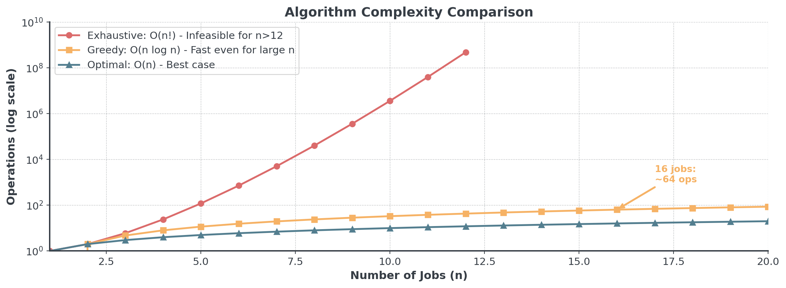
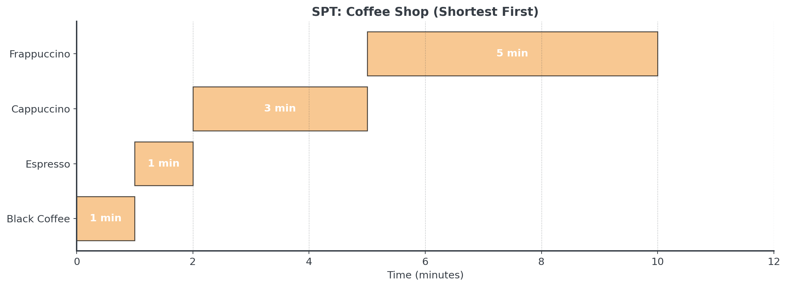
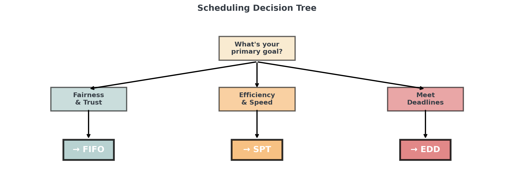
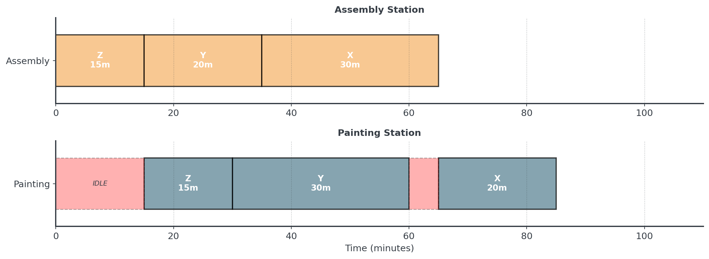

Smart Quick Decisions
Lecture 6 - Management Science
Introduction
Client Briefing: Custom Cycles Manufacturing
. . .
Operations Manager’s Friday Crisis:
“It’s Friday 2 PM. We just received 16 custom bicycle orders that must be completed by Monday. Two workstations. Rush orders with penalties. Overtime costs €100/hour after Saturday 8 PM. How do we schedule production to minimize costs?”
The Manufacturing Challenge
Custom Cycles faces multiple scheduling decisions:
- Order Sequencing: Which bike to build first?
- Workstation Management: Assembly must finish before painting
- Deadline Pressure: Rush orders have steep penalties (€150 each)
- Cost Control: Overtime at €100/hour after Saturday 8 PM
. . .
The Stakes: With 16 orders totaling 13+ hours of work, wrong scheduling could mean €1000+ in overtime and penalties!
Why Can’t We Just Try Everything?
Question: With 16 bicycle orders to sequence, how many possible schedules exist?
. . .
16! = 20,922,789,888,000 possible schedules
. . .
Number of Orders
- 5 bikes
- 10 bikes
- 16 bikes
Possible Schedules
- 120
- 3.6 million
- 20.9 trillion
. . .
Testing all 20.9 trillion possibilities for 16 bikes would take thousands of years on a modern computer!
Can You Spot the Pattern?
Look at these 4 bicycle orders. Which should we build first?
. . .
| Order | Arrival | Processing | Due | Penalty |
|---|---|---|---|---|
| B12 | 1st | 90 min | 180 min | €150 |
| B08 | 2nd | 45 min | 280 min | €150 |
| B15 | 3rd | 75 min | 220 min | €150 |
| B03 | 4th | 30 min | 300 min | €150 |
. . .
Question: How would you proceed here?
. . .
This is the greedy choice problem: Which local decision leads to the best global outcome?
Core Concepts
What Are Greedy Algorithms?
Greedy algorithms make the locally optimal choice at each step.
. . .
The Idea: “Take what looks best right now, don’t look back”
- Fast: O(n log n)1 vs O(n!) for exhaustive search
- Simple: Easy to implement and explain
- Good Enough: Often near-optimal for many problems
- But: No guarantee of global optimality
The Greedy Paradigm
Algorithmic strategy that builds solutions piece by piece
. . .
Core Philosophy:
- Make the best immediate decision at each step
- Never reconsider previous choices (no backtracking)
- Hope that local optimality leads to global optimality
- Trade guaranteed optimality for speed and simplicity
. . .
Greedy algorithms are one of the three major algorithmic paradigms alongside Divide & Conquer (e.g., merge sort) and Dynamic Programming (e.g., Fibonacci with memoization).
Greedy in Everyday Life
You already use greedy thinking daily!
. . .
Common Greedy Decisions:
- Making change: Give the largest coin first (€2 → €1 → €0.50…)
- Grocery shopping: Pick items with best price/value ratio
- Route planning: Take the nearest unvisited landmark
- Packing a suitcase: Put largest items in first
- Reading emails: Answer quick replies first, defer complex ones
. . .
Question: Which of these actually gives the optimal solution?
When Greedy Works vs. Fails
Not all greedy algorithms are optimal
. . .
Greedy IS Optimal:
- Prim’s/Kruskal’s algorithms (minimum spanning tree)
- SPT scheduling (minimizes average flow time)
- EDD scheduling (minimizes maximum lateness)
. . .
Greedy FAILS:
- Traveling salesman problem (nearest neighbor is worse)
- 0/1 Knapsack (greedy by value/weight ratio fails)
The Two Key Properties
For greedy to be optimal, we need:
. . .
1. Greedy Choice Property
- Locally optimal choice leads to globally optimal solution
- Can make choice without considering future consequences
. . .
2. Optimal Substructure
- Optimal solution contains optimal solutions to subproblems
- After making greedy choice, remaining problem is similar
Complexity: Why Greedy is Fast
. . .
For 16 bikes: Exhaustive = 20 trillion operations, Greedy = 64 operations!
Three Classic Scheduling Rules
We’ll explore three greedy approaches that manufacturing uses:
- FIFO (First In, First Out) - The fairness rule
- SPT (Shortest Processing Time) - The efficiency rule
- EDD (Earliest Due Date) - The deadline rule
. . .
Question: Which rule would you use for the bike factory with penalties and overtime costs?
Rule 1: FIFO (First In, First Out)
Process jobs in the order they arrive, no prioritization.
- When it’s good: Ensures fairness and prevents “customer favoritism”
- When it’s optimal: When all jobs have equal importance and no deadlines
- Real-world use: Bank queues, ticket counters, help desk systems
. . .
Like scheduling job interviews when all candidates applied at different times: You interview in application order to be fair, even if some candidates are stronger.
Example: Hospital Check-In

. . .
See the pattern? We just do patient A, then patient B, then patient C, then patient D.
2: SPT (Shortest Processing Time)
The Idea: Process quickest job next to maximize throughput.
- When it’s good: Minimizes average waiting time for customers
- When it’s optimal: Proven optimal for minimizing mean completion time
- Real-world use: Express checkout lanes, quick service repairs, email triage
. . .
Like answering emails: Respond to quick 1-minute replies first, then tackle the complex ones requiring research so more people get helped faster.
Example: Coffee Shop Orders

. . .
However, not all customers might be willing to wait longer for their orders!
Rule 3: EDD (Earliest Due Date)
The Idea: Jobs by deadline order to tackle urgent work first.
- When it’s good: Minimizes number of late jobs (tardiness)
- When it’s optimal: Proven optimal for minimizing maximum lateness
- Real-world use: Project deadlines, delivery logistics, exam grading
. . .
Like grading assignments: Grade the papers due back tomorrow before the ones due next week so students get feedback when promised.
Example: Package Delivery

. . .
Note, that we only minimize maximal lateness here!
Quick Reference & Decision Guide
Choose your rule based on business priority
. . .

Implementing SPT in Python I
Let’s code it together - it’s remarkably simple!
Let’s assume we want to make some pizzas under deadlines.
# Pizza data
pizzas = [
{'id': 'P1', 'time': 10, 'due': 20},
{'id': 'P2', 'time': 8, 'due': 15},
{'id': 'P3', 'time': 6, 'due': 25},
{'id': 'P4', 'time': 15, 'due': 20},
{'id': 'P5', 'time': 12, 'due': 30},
]. . .
Question: How should we proceed for SPT?
Implementing SPT in Python II
# SPT Rule: Sort by processing time
spt_order = sorted(pizzas, key=lambda p: p['time'])
print("SPT Schedule:")
current_time = 0
for pizza in spt_order:
current_time += pizza['time']
print(f" {pizza['id']}: due {pizza['due']}, done {current_time}")SPT Schedule:
P3: due 25, done 6
P2: due 15, done 14
P1: due 20, done 24
P5: due 30, done 36
P4: due 20, done 51. . .
Easy, right? Just one line of Python! sorted() with a key function. Greedy algorithms are often simple to implement.
Implementing EDD in Python
EDD is just as simple - change the sorting key!
# EDD Rule: Sort by due date
edd_order = sorted(pizzas, key=lambda p: p['due'])
print("EDD Schedule:")
current_time = 0
for pizza in edd_order:
current_time += pizza['time']
print(f" {pizza['id']}: due {pizza['due']}, done {current_time}")EDD Schedule:
P2: due 15, done 8
P1: due 20, done 18
P4: due 20, done 33
P3: due 25, done 39
P5: due 30, done 51. . .
Question: Can you modify this to implement FIFO?
Comparing All Three
Now let’s compare all three rules on the same dataset
. . .
Scenario: 4 rush bike orders arrive with conflicting priorities
. . .
| Order | Arrival | Processing | Due | Penalty |
|---|---|---|---|---|
| B12 | 1st | 90 min | 180 min | €150 |
| B08 | 2nd | 45 min | 280 min | €150 |
| B15 | 3rd | 75 min | 220 min | €150 |
| B03 | 4th | 30 min | 300 min | €150 |
. . .
Question: How would we schedule for each rule?
All Schedules Compared

. . .
No single rule is always best! The right choice depends on your objectives, which might include fairness, throughput, deadlines and much more.
Key Takeaways
- FIFO: Simple and fair, but ignores job characteristics
- SPT: Minimizes average completion time
- EDD: Minimizes maximum lateness
. . .
Question: Any questions up until here?
Applications
Professional Applications I
Where scheduling algorithms appear in practice
. . .
Project Management:
- Task dependencies and precedence constraints
- Resource allocation across teams
. . .
Software Development:
- CPU process scheduling (operating systems)
- Thread management and concurrency
Professional Applications II
Operations & Manufacturing:
- Production line scheduling and supply chain optimization
- Warehouse picking routes and maintenance scheduling
. . .
Transportation & Logistics:
- Vehicle routing problems
- Crew scheduling and maintenance window planning
. . .
Healthcare:
- Patient appointment scheduling and staff shift scheduling
Performance Metrics
Metric Definitions
If we formalize these:
- Completion Time (\(C_i\)): When job \(i\) finishes
- Flow Time (\(F_i\)): Time job spends in system = \(C_i - \text{arrival}_i\)
- Lateness (\(L_i\)): \(C_i - \text{due}_i\) (can be negative = early)
- Tardiness (\(T_i\)): \(\max(0, L_i)\) (only counts late jobs)
Aggregate Metric Definitions
If we look at several of these:
- Makespan (\(C_{\max}\)): \(\max(C_i)\) - when all jobs done
- Average Flow Time: \(\sum F_i / n\)
- Total Tardiness: \(\sum T_i\)
- Maximum Lateness: \(\max(L_i)\)
. . .
Question: In which context would you use each metric?
Why Metrics Matter
Different objectives require different metrics
. . .
Business Context Matters:
- Manufacturing: Minimize total production time (makespan)
- Service: Minimize average customer wait (flow time)
- Delivery: Minimize late deliveries (tardiness)
- Contracts: Minimize worst-case lateness (maximum lateness)
- Customer satisfaction: Minimize number of late jobs
. . .
You can’t optimize what you don’t measure! Choose metrics that align with business goals.
Which Metric When?
Matching metrics to business context
| Business Goal | Metric to Optimize | Best Rule |
|---|---|---|
| Reduce customer wait time | Avg Flow Time | SPT |
| Meet all deadlines | Max Lateness | EDD |
| Minimize contract penalties | Total Tardiness | EDD |
| Maximize throughput | Makespan | Any (same!) |
| Customer satisfaction | Number Late | EDD |
| Fairness/transparency | (none) | FIFO |
Two-Stage Scheduling
The Real Challenge: Flow Shops
Most manufacturing involves multiple stages
. . .
Flow Shop: Jobs must visit machines in the same order
- Car manufacturing: Welding → Painting → Assembly
- Bicycle factory: Assembly → Painting
- Electronics: Circuit board → Component placement → Testing
- Restaurant: Cooking → Plating → Service
. . .
Key difference from single-machine: Machine 2 must wait for Machine 1 to finish each job. This creates idle time and blocking.
Two-Stage Example Setup
3 Bicycles through Assembly → Painting
| Bike | Assembly Time | Painting Time | Total |
|---|---|---|---|
| X | 30 min | 20 min | 50 |
| Y | 20 min | 30 min | 50 |
| Z | 15 min | 15 min | 30 |
. . .
Question: If we process in order X → Y → Z, what happens?
FIFO: X → Y → Z

. . .
Painting station waits 30 minutes for first bike! Total time = 95 minutes
Why Simple Rules Struggle
Each rule has ambiguities in two-stage problems
. . .
SPT - Shortest Processing Time:
- Sort by assembly time? → Favors Z (15 min)
- Sort by painting time? → Favors X (20 min)
- Sort by total time? → All tied (50, 50, 30)
. . .
EDD - Earliest Due Date: Doesn’t minimize idle time or makespan
. . .
FIFO: Arbitrary order, no optimization
. . .
Question: Is there a better approach for minimizing makespan?
Johnson’s Algorithm: The Intuition
Why does Johnson’s work? Let’s understand the logic first
. . .
Think about bottlenecks in a two-stage flow:
- Machine 2 sits idle waiting for Machine 1 to finish
- Goal: Minimize that idle time
. . .
Key Observation:
- If a job is quick on Machine 1 → Do it early (Machine 1 finishes fast, Machine 2 starts sooner!)
- If a job is quick on Machine 2 → Do it late (Machine 2 can finish quickly at the end, no wasted capacity)
Johnson’s Algorithm: The Rule
Four simple steps to optimal scheduling
. . .
- Find minimum time across both machines for all remaining jobs
- If minimum is on M1: Schedule this job at earliest open position
- If minimum is on M2: Schedule this job at latest open position
- Repeat until all jobs scheduled
. . .
Johnson proved this greedy choice property guarantees global optimum for makespan in 2-machine flow shops!
. . .
Let’s apply this to our 3 bikes…
Applying Johnson’s Algorithm
| Bike | Assembly | Painting | Min Time |
|---|---|---|---|
| X | 30 | 20 | 20 (P) |
| Y | 20 | 30 | 20 (A) |
| Z | 15 | 15 | 15 (A/P) |
- Min time = 15 (Z, assembly) → Schedule Z first
- Min time = 20 (Y, assembly) → Schedule Y second
- Min time = 20 (X, painting) → Schedule X last
. . .
Easy, right?
Johnson’s Schedule: Z → Y → X

. . .
10-minute improvement! (85 vs 95) - 10.5% faster with optimal ordering
Beyond Two Machines
What about 3+ machines?
. . .
Bad news:
- 3+ machine flow shop is NP-hard
- No polynomial optimal algorithm known
. . .
Good news:
- Heuristics work well in practice
- Simulated annealing, genetic algorithms
Weighted Scheduling
Revenue-Based: Consulting Firm
5 consulting projects with different durations and revenues
| Project | Duration | Revenue | Revenue/Hour |
|---|---|---|---|
| C | 55h | €11,000 | €200 |
| A | 25h | €6,000 | €240 |
| E | 55h | €4,950 | €90 |
| D | 45h | €5,400 | €120 |
| B | 35h | €7,000 | €200 |
. . .
Goal: Maximize revenue during limited consulting time
. . .
Question: Sort by total revenue? Duration? Or something else?
Revenue/Hour Rule
Rule: Sort by revenue per hour (descending)
. . .
Sorted by Revenue/Hour:
| Project | Duration | Revenue | Revenue/Hour | Schedule |
|---|---|---|---|---|
| A | 25h | €6,000 | €240 | 1st |
| B | 35h | €7,000 | €200 | 2nd |
| C | 55h | €11,000 | €200 | 3rd |
| D | 45h | €5,400 | €120 | 4th |
| E | 55h | €4,950 | €90 | 5th |
. . .
Optimal order: A → B → C → D → E
Why Revenue/Hour Works
Maximizing early revenue in capacity-constrained situations
. . .
Scenario: 120 hours of consulting capacity this quarter
- Revenue/hour approach: A+B+C = 115h → €24,000 revenue
- Wrong order (E+D+C): E+D+C = 155h → Doesn’t fit!
- Only E+D = 100h → €10,350 revenue
- Worst case: Start with low-revenue/hour projects, waste capacity
. . .
This is Smith’s Rule in action: Sort by (value / time) to maximize weighted completion!
Advanced
Dynamic vs Static Scheduling
How scheduling changes with job arrivals
. . .
Static (Offline):
- All jobs known upfront
- Schedule computed once
- Can often use optimal algorithms
Dynamic (Online):
- Most real-world scenarios
- Jobs arrive over time
- Must make decisions without future knowledge
. . .
Question: Any ideas about complications in dynamic environments?
. . .
Question: Any other real world considerations?
Real-World Considerations
- Setup Times:
- Changing requires tool adjustments or cleaning
- Sequence-dependent scheduling (TSP-like)
. . .
- Resource Constraints:
- Limited ressources, specialized tools, material shortages
- Worker skill levels and availability
. . .
- Uncertainty:
- Processing times, break downs, and other unforeseen events
Hybrid Scheduling Strategies
1. Priority Classes:
IF order.type == "Rush":
schedule using EDD
ELSE:
schedule using SPT. . .
2. Time-Based Switching:
IF current_time < 3pm:
use SPT (maximize throughput)
ELSE:
use EDD (meet end-of-day deadlines). . .
3. Threshold Rules:
IF (due_date - current_time) < 30 minutes:
prioritize this order (emergency mode)
ELSE:
use normal SPT ruleCommon Scheduling Mistakes I
Learn from others’ errors - avoid these pitfalls!
. . .
Question: Any idea what could be common mistakes?
. . .
Mistake #1: Ignoring Setup Times
- Problem: Changing from between tasks requires adjustments
- Impact: Your “optimal” SPT schedule wastes 3 hours on setups
- Fix: Batch similar tasks together (hybrid rule: SPT within batches)
Common Scheduling Mistakes II
Learn from others’ errors - avoid these pitfalls!
Mistake #2: Static Scheduling with Dynamic Arrivals
- Problem: Using Johnson’s algorithm at 2 PM, never adjusting when urgent orders arrive at 4 PM
- Impact: New rush order sits idle while finishing low-priority work
- Fix: Re-optimize periodically or use priority thresholds
Common Scheduling Mistakes III
Learn from others’ errors - avoid these pitfalls!
Mistake #3: Optimizing the Wrong Metric
- Problem: Minimizing makespan when penalty costs dominate
- Impact: You “win” on time but lose €400 on penalties
- Fix: Always align algorithm choice with total cost function
Personal Schedules
Thrashing
When scheduling breaks down completely
. . .
What is Thrashing?
- Excessive context switching between tasks
- Organization overhead exceeds actual productivity
- Maximum activity, minimum output
. . .
Question: Do you know this from your personally?
Thrashing Warning Signs
How to recognize when you’re thrashing
. . .
Individual Level:
- Constant task switching (< 15 minutes per task)
- Nothing getting completed despite being “busy”
- Increasing stress and anxiety
- Declining quality of work
- Feeling overwhelmed despite working hard
Preventing Thrashing
Strategic approaches to maintain productivity
. . .
Strategic Solutions:
- Task rejection threshold: Say no to new tasks when queue exceeds capacity
- Minimum work periods: Minimum focus time per task
- Batching: Group similar tasks (all emails at once, all calls at once)
- Buffer times: Schedule gaps between major tasks
- Reduced reactivity: Check email at set times, not constantly
Today’s Tasks
Today
Hour 2: This Lecture
- Greedy algorithms
- FIFO, SPT, EDD rules
- Trade-offs
- Gantt charts
Hour 3: Notebook
- Bean Counter CEO
- Implement rules
- Visualizations
- Analyze orders
Hour 4: Competition
- Bike Factory Crisis
- 16 bicycle orders
- Two-stage process
- Minimize total costs!
The Competition Challenge
The Bike Factory Crisis
. . .
- Schedule 16 custom bicycle orders across 2 workstations
- Optimize Assembly → Painting workflow
- Balance overtime costs vs. late delivery penalties
- Minimize total cost (overtime + penalties)
. . .
Choose the right trade-off for the business context!
Key Takeaways
Remember This!
The Rules of Greedy Scheduling
- Know your objective - Fairness, speed, or deadlines?
- FIFO for fairness - Simple, transparent, no favoritism
- SPT for throughput - Minimizes average completion time
- EDD for deadlines - Minimizes maximum lateness
- No single winner - Each rule optimizes different metrics
- Context matters - Match the rule to your business goal
- Two-stage is harder - Assembly → Painting adds complexity
Final Thought
Greedy algorithms are about smart trade-offs
. . .
The Advantage:
- Fast O(n log n)
- Easy to implement
- Explainable decisions
- Often near-optimal
- Practical for real-time
The Challenge:
- No global optimality guarantee
- Different rules, different results
- Three-stage problems are complex
- May need hybrid approaches
Break!
Take 20 minutes, then we start the practice notebook
Next up: You’ll become Bean Counter’s scheduler
Then: The Bike Factory Crisis competition
Footnotes
Why n log n? Greedy algorithms typically: (1) Sort the jobs by some criterion = O(n log n), and (2) Process each job once = O(n). The sorting dominates, so overall O(n log n).↩︎